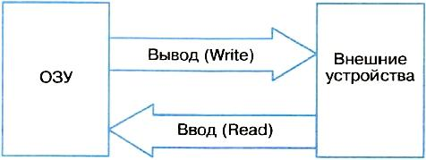
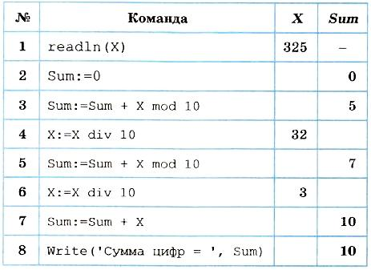

Оператор присваивания, ввод и вывод данных
Присваивание — это действие, в результате которого переменная величина получает определенное значение. В программе на Паскале существуют три способа присваивания значения переменной:
- Оператор присваивания
- Оператор ввода
- Передача значения через параметры подпрограммы
Оператор присваивания имеет следующий формат:
<переменная>:=<выражение>
Например:
x:=2*a+sqrt(b) ;
b:=(x>y) and (k<>0);
Сначала вычисляется выражение, затем полученное значение присваивается переменной. В первом примере приведен арифметический оператор присваивания. Здесь х — переменная вещественного типа. Во втором примере — логический оператор присваивания. Здесь b — переменная типа Boolean.
Типы переменной и выражения должны совпадать. Из этого правила есть одно исключение: переменной вещественного типа можно присваивать значение целочисленного выражения. В таком случае значение целого числа преобразуется к формату с плавающей запятой и присвоится вещественной переменной.
Ввод и вывод данных
Под вводом понимается передача данных с внешнего устройства компьютера в оперативную память. При выводе данные передаются из оперативной памяти на внешнее устройство:
Операция ввода называется чтением и выполняется с помощью оператора Read. Вывод называется записью, и для его выполнения используется оператор Write.
К внешним устройствам относятся устройства ввода и вывода (клавиатура, монитор, принтер и др.) и устройства внешней памяти (магнитные и оптические диски, флеш-память и др.). Данные на внешних устройствах организованы в файлы.
Для внешних запоминающих устройств (ВЗУ) файл — это поименованная область памяти этого устройства. В файлы на ВЗУ можно записывать данные по команде Write и можно читать данные из файлов по команде Read. На одном устройстве ВЗУ может храниться множество файлов одновременно. Правила именования файлов на ВЗУ определяются операционной системой. Имена для файлов, создаваемых пользователем, задает сам пользователь.
Устройства ввода с клавиатуры и вывода на экран монитора являются однофайловыми устройствами. Считается, что с клавиатурой связан один системный файл с именем INPUT. Поэтому ввод с клавиатуры равнозначен чтению из файла INPUT. С монитором связан системный файл, который называется OUTPUT. Вывод на экран — это запись данных в файл OUTPUT .
Ввод с клавиатуры производится путем обращения к стандартной процедуре Read в следующем формате:
Read(<список ввода>)
Чтение происходит из системного файла INPUT, всегда доступного для любой программы. Элементами списка ввода могут быть переменные символьного типа, числовых типов и строковые переменные.
Например:
Read(a, b, c, d)
При выполнении этого оператора происходит прерывание исполнения программы, после чего пользователь должен набрать на клавиатуре значения переменных а, Ь, с, d, отделяя их друг от друга пробелами. При этом вводимые значения высвечиваются на экране. В конце нажимается клавиша Enter. Значения следует вводить в строгом соответствии с синтаксисом Паскаля.
Пример:
Var T: Real; J: Integer; K: Char;
Begin
Read(T, J, K);
Набираем на клавиатуре:
253.98 100 G [Enter]
Если в программе имеется несколько подряд идущих операторов Read, то данные для них можно вводить последовательно (на экране отражаются в одной строке) и лишь в конце ввода нужно нажать клавишу Enter.
Пример:
Var A, B: Integer;
C, D: Real;
Begin
Read(A, B);
Read(C, D);
набираем на клавиатуре и видим на экране:
18758 34 [Enter] 2.62 1.54[Enter]
Другой вариант ввода с клавиатуры имеет вид:
Readln(<список ввода>)
Здесь слово «ReadLn» означает read line — «читать строку». Нажатие клавиши Enter в процессе ввода вырабатывает признак «конец строки», и данные при выполнении следующего оператора ввода будут отражаться на экране с начала новой строки. Если в предыдущем примере заменить операторы Read на ReadLn:
Readln(A, B);
Readln(C, D);
То ввод значений будет происходить из двух строк, отражённых на экране:
18758 34 [Enter]
2.62 1.54[Enter]
Вывод на экран производится по оператору обращения к стандартной процедуре:
Write(<список вывода>)
Здесь элементами списка вывода могут быть выражения различных типов (в частности, константы и переменные).
Например:
Write('Сумма ', A, '+', B, '=', A+B
Если, например, А = 5 и В = 7, то на экране получим:
Сумма 5+7=12
При выводе на экран нескольких значений в строку, они не отделяются друг от друга пробелами. Программист сам должен позаботиться о таком разделении. В приведенном примере предусмотрен пробел после слова «Сумма».
Второй вариант процедуры вывода на экран:
Writeln(<список вывода>)
Write line — «писать строку». Его действие отличается от оператора Write тем, что после вывода последнего в списке значения происходит перевод курсора к началу следующей строки. Оператор WriteLn, записанный без параметров, вызывает перевод строки.
В списке вывода могут присутствовать указатели форматов вывода (форматы). Формат определяет представление выводимого значения на экране. Формат отделяется от соответствующего ему элемента двоеточием. Если указатель формата отсутствует, то машина выводит значение по определенному правилу, предусмотренному по умолчанию.
Линейная программа
Следование — простейшая алгоритмическая структура. Программа, реализующая следование, называется линейной программой. В линейной программе могут присутствовать только операторы присваивания, ввода, вывода и обращения к процедурам. Заметим, что операторы Read и Write являются обращениями к стандартным процедурам Паскаля.
Одним из обязательных условий хорошего стиля программирования является организация диалога между компьютером и пользователем. Такое диалоговое взаимодействие называется интерактивным интерфейсом.
Пример 1. Составим линейную программу, по которой в диалоге будут вводиться два целых числа и вычисляться их произведение.
Program Multiply;
Var A, B, AB: integer;
Begin
Write('A = ');
Readln(A);
Write('B = ');
Readln(B);
AB:= A * B
Write(A, ' * ', B, ' = ', AB
End.
Тестирование этой программы отразится на экране следующим образом.
A = 13
B = 28
13 * 28 = 364
Числа 13 и 28 вводятся пользователем с клавиатуры, всё остальное автоматически выводится по программе.
Пример 2. Дано натуральное трехзначное число. Требуется вычислить сумму его цифр. Например, если дано число 325, то в результате должно получиться:
3 + 2 + 5 = 10.
Сначала составим программу, а потом ее прокомментируем.
Program sumCifr;
Var X, Sum: integer;
Begin
Write('Введите трёхзначное число: ');
Readln(X)
Sum:= 0;
Sum:= Sum + X mod 10;
X:= X div 10;
Sum:= Sum + X mod 10;
X:= X div 10;
Sum:= Sum + X;
Write('Сумма цифр = ', Sum);
End.
В этой программе использованы две операции целочисленной арифметики: div — целочисленное деление и mod — остаток от целочисленного деления (см. Бинарные операции Паскаля). Остаток от деления на 10 (mod) выделяет младшую цифру числа, а целочисленное деление на 10 (div) отбрасывает младшую цифру.
Чтобы лучше понять работу программы, выпишем значения переменных после каждой операции. Для программы SumCifr таблица будет выглядеть следующим образом:
Выполнение программы на компьютере приводит к такому же результату.
Заметим, что эту задачу можно решить с помощью всего одного оператора присваивания:
Sum:= X mod 10 + X div 10 mod 10 + X div 100
Проверьте самостоятельно.